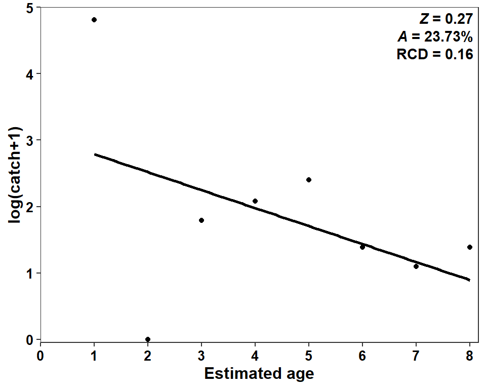
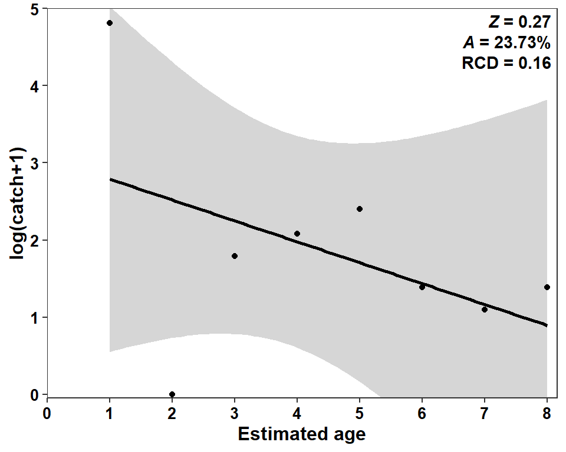

library(tidyverse) # for dplyr, ggplot2 packages
library(ggtext) # for use of markdown in text/labels
library(FSA) # for catchCurve et al.
Series Note
Introduction
Miller et al. (2022) examined life history characteristics of Goldeye (Hiodon alosoides) in two Kansas reservoirs. Their Figure 4 represents a catch curve (log catch at age) for Goldeye captured in Milford Reservoir in 2020. I use FSA and ggplot2 here to recreate this figure.
The following packages are loaded for use below. A few functions from each of readxl and scales are used with :: such that the entire packages are not attached here.
Data Wrangling
Miller et al. (2022) provided the raw data for producing Figure 4 in their Data Supplement S2. These are the same data used to recreate Figures 2 and 3 in this post. Thus, I do not explain the data wrangling used to obtain dat2 below.
dat2 <- read.csv("../2023-3-31_Milleretal2022_Fig23/JFWM-21-090.S2.csv") |>
filter(ann==1)
head(dat2)#R| netid tl w agecap ann bclen
#R| 1 6 385 521 6 1 210
#R| 2 6 357 466 4 1 213
#R| 3 6 397 725 5 1 209
#R| 4 8 393 610 8 1 202
#R| 5 8 373 571 4 1 193
#R| 6 8 389 656 6 1 163The total catch of individuals at each age-at-capture is required to construct Figure 4. One issue that occurs with these data is that no age-2 fish were captured and Miller et al. (2022) treat this as an observed zero. If the data are simply grouped by agecap and summarized then no age-2 data will be present in the result. There are several ways to deal with this but I am going to handle it by first creating a new variable fagecap that is a factored version of agecap. The key here, though, is to set the levels of this new variable to cover the entire range of observed ages.
dat2 <- dat2 |>
mutate(fagecap=factor(agecap,levels=1:8))The “sample size” (i.e., catch) at each fagecap is then found. It is important to use .drop=FALSE so that the age-2 “level” is not removed from the resultant data frame because it did not exist in the original data frame.
sum_a <- dat2 |>
group_by(fagecap,.drop=FALSE) |>
summarize(catch=n())
sum_a#R| # A tibble: 8 × 2
#R| fagecap catch
#R| <fct> <int>
#R| 1 1 122
#R| 2 2 0
#R| 3 3 5
#R| 4 4 7
#R| 5 5 10
#R| 6 6 3
#R| 7 7 2
#R| 8 8 3The issue now with using these data is that fcapage is a factor rather than a numeric. Thus, a new agecap variable is created below that treats age as numeric.1
1 This conversion code comes from ?factor.
sum_a <- sum_a |>
mutate(agecap=as.numeric(levels(fagecap)))
sum_a#R| # A tibble: 8 × 3
#R| fagecap catch agecap
#R| <fct> <int> <dbl>
#R| 1 1 122 1
#R| 2 2 0 2
#R| 3 3 5 3
#R| 4 4 7 4
#R| 5 5 10 5
#R| 6 6 3 6
#R| 7 7 2 7
#R| 8 8 3 8Finally, the catch curve analysis ultimately requires log-transforming the catch variable. The zero for age-2 will cause an error when log-transforming. The authors addressed this by adding 1 to all of the catches. This is common practice, but I comment on it further below. Also, for use when recreating Figure 4, the log of these modified catches are added to the data frame.
sum_a <- sum_a |>
mutate(catch1=catch+1,
logcatch1=log(catch1))
sum_a#R| # A tibble: 8 × 5
#R| fagecap catch agecap catch1 logcatch1
#R| <fct> <int> <dbl> <dbl> <dbl>
#R| 1 1 122 1 123 4.81
#R| 2 2 0 2 1 0
#R| 3 3 5 3 6 1.79
#R| 4 4 7 4 8 2.08
#R| 5 5 10 5 11 2.40
#R| 6 6 3 6 4 1.39
#R| 7 7 2 7 3 1.10
#R| 8 8 3 8 4 1.39Catch Curve Analysis
Catch curves analysis2 may be conducted with catchCurve() from FSA. catchCurve require a formula of the form catch~age as the first argument and the corresponding data frame in data=. The “weighted catch curve” that Miller et al. (2022) used requires weighted=TRUE in catchCurve(). The results should be saved to an object.
2 I assume the reader is familiar with catch curves. If not see Chapter 11 in Ogle (2016).
cc1 <- catchCurve(catch1~agecap,data=sum_a,weighted=TRUE)The point estimates of \(Z\) and \(A\) may be extracted with coef() or seen in the Estimate column of the summary() results.
coef(cc1)#R| Z A
#R| 0.2709483 23.7344113summary(cc1)#R| Estimate Std. Error t value Pr(>|t|)
#R| Z 0.2709483 0.2544583 1.064805 0.3279271
#R| A 23.7344113 NA NA NAThe so-called “recruitment coefficient of determination” (RCD) in Miller et al. (2022) is just the usual r2, which can be extracted from the summary() of the lm object in cc1.
( r2 <- summary(cc1$lm)$r.squared )#R| [1] 0.1589346These results were put into a label that will ultimately be placed on the plot.3
3 This process is discussed in several previous posts, including this one.
lbl <- paste0("*Z* = ",round(coef(cc1)[["Z"]],2),
"<br>*A* = ",round(coef(cc1)[["A"]],2),"%",
"<br>RCD = ",round(r2,2))
lbl#R| [1] "*Z* = 0.27<br>*A* = 23.73%<br>RCD = 0.16"The cc1 object also contains the data used in the catch curve analysis, including the weights in an object called weights.e. These weights are added to the sum_a data frame as they are needed to produce Figure 4.4
4 The weights can be produced “manually” as described in Ogle (2016), but this process using catchCurve() is more efficient and less prone to error.
sum_a <- sum_a |>
mutate(wts=cc1$weights.e)
sum_a#R| # A tibble: 8 × 6
#R| fagecap catch agecap catch1 logcatch1 wts
#R| <fct> <int> <dbl> <dbl> <dbl> <dbl>
#R| 1 1 122 1 123 4.81 2.68
#R| 2 2 0 2 1 0 2.45
#R| 3 3 5 3 6 1.79 2.22
#R| 4 4 7 4 8 2.08 1.98
#R| 5 5 10 5 11 2.40 1.75
#R| 6 6 3 6 4 1.39 1.52
#R| 7 7 2 7 3 1.10 1.29
#R| 8 8 3 8 4 1.39 1.06The data in sum_a are now ready to recreate Figure 4.
Recreating Figure 4
Figure 4 is simply a scatterplot with a regression line overlaid. Constructing these kinds of plots was discussed in detail in this post. Thus, most of the code below are not discussed in depth. A very important detail, though, is that mapping weight=wts will provide the wts to lm() in geom_smooth() as weights, so that the weighted regression is used in the same way as was done in catch_curve().5
5 In my opinion, the y-axis title should clearly note that 1 was added to the catches. Thus, my y-axis title is different than that in Miller et al. (2022).
ggplot(data=sum_a,mapping=aes(x=agecap,y=logcatch1,weight=wts)) +
geom_smooth(method="lm",se=FALSE,color="black") +
geom_point() +
scale_x_continuous(name="Estimated age",
limits=c(0,8),breaks=scales::breaks_width(1),
expand=expansion(mult=c(0,0.02))) +
scale_y_continuous(name="log(catch+1)",
limits=c(0,5),breaks=scales::breaks_width(1),
expand=expansion(mult=c(0.01,0))) +
theme_bw() +
theme(panel.grid=element_blank(),
axis.title=element_text(size=12,face="bold"),
axis.text=element_text(size=10,face="bold",color="black")) +
annotate(geom="richtext",x=Inf,y=Inf,vjust=1,hjust=1,label=lbl,
label.color=NA,fontface="bold")
Possible Modifications
As with other posts related to Miller et al. (2022), a confidence band can be added to this regression.6
6 Note use of coord_cartesian() as the confidence band extends outside the desired range of the y-axis.
ggplot(data=sum_a,mapping=aes(x=agecap,y=logcatch1,weight=wts)) +
geom_smooth(method="lm",color="black") +
geom_point() +
scale_x_continuous(name="Estimated age",
limits=c(0,8),breaks=scales::breaks_width(1),
expand=expansion(mult=c(0,0.02))) +
scale_y_continuous(name="log(catch+1)",
breaks=scales::breaks_width(1),
expand=expansion(mult=c(0.01,0))) +
coord_cartesian(ylim=c(0,5)) +
theme_bw() +
theme(panel.grid=element_blank(),
axis.title=element_text(size=12,face="bold"),
axis.text=element_text(size=10,face="bold",color="black")) +
annotate(geom="richtext",x=Inf,y=Inf,vjust=1,hjust=1,label=lbl,
label.color=NA,fontface="bold")
Here, I think the confidence band is critical to include because it demonstrates that the regression line is NOT statistically declining.7 Obviously, there is mortality in this population, so this indicates data issues.
7 This was also apparent by the “large” p-value for the slope in the summary(cc1) results above.
A major assumption of catch curve analysis is that recruitment is constant, which it clearly is not here. The most glaring evidence of this is the complete lack of age-2 fish. I don’t know if the age-2 fish should be considered as an observed zero (i.e., that age-class is actually very low) or if there is a sampling issue (i.e., was the gear highly selective; here is some evidence for that in the length frequency histogram in their Figure 2 and in this post.)
It is common to add 1 to “integer” data that has zeroes prior to log-transformation. However, this can be problematic. For example, adding 1 to the catch of age-1 fish is relatively minor (<1% change from 122 to 123), but the same modification is relatively important for the catch of age-7 fish (50% increase from 2 to 3). This can influence mortality estimates. For example, below one was added only to the age-2 catch.8
8 I am not suggesting that this is the correct thing to do. However, the authors would not have added a 1 if one age-2 fish had been captured. Thus, this will demonstrate some level of sensitivity to the data collection and analysis choice.
sum_a <- sum_a |>
mutate(catch1a=ifelse(agecap==2,1,catch))
sum_a#R| # A tibble: 8 × 7
#R| fagecap catch agecap catch1 logcatch1 wts catch1a
#R| <fct> <int> <dbl> <dbl> <dbl> <dbl> <dbl>
#R| 1 1 122 1 123 4.81 2.68 122
#R| 2 2 0 2 1 0 2.45 1
#R| 3 3 5 3 6 1.79 2.22 5
#R| 4 4 7 4 8 2.08 1.98 7
#R| 5 5 10 5 11 2.40 1.75 10
#R| 6 6 3 6 4 1.39 1.52 3
#R| 7 7 2 7 3 1.10 1.29 2
#R| 8 8 3 8 4 1.39 1.06 3And the catch curve analysis was conducted with these data instead.
cc1a <- FSA::catchCurve(catch1a~agecap,data=sum_a,weighted=TRUE)
summary(cc1a)#R| Estimate Std. Error t value Pr(>|t|)
#R| Z 0.3400406 0.2737122 1.242329 0.2604674
#R| A 28.8258572 NA NA NAThe issue of no statistical decline is still evident, but the point estimates of A, for example, has increased substantially.
Ignoring the age-2 “fish” completely has an even larger effect.
cc1b <- FSA::catchCurve(catch~agecap,data=sum_a,ages2use=-2,weighted=TRUE)
summary(cc1b)#R| Estimate Std. Error t value Pr(>|t|)
#R| Z 0.6105809 0.1688334 3.61647 0.0152761
#R| A 45.6964676 NA NA NAI am not sure what is the best way to handle this problem, but this exercise suggests to me that the published mortality estimate should be considered cautiously.
References
Miller, B. T., E. Flores, D. S. Waters, and B. C. Neely. 2022. An evaluation of Goldeye life history characteristics in two Kansas reservoirs. Journal of Fish and Wildlife Management 13(1):243–249.
Ogle, D. H. 2016. Introductory Fisheries Analyses with R. CRC Press, Boca Raton, FL.
Reuse
Citation
BibTeX citation:
@online{h._ogle2023,
author = {H. Ogle, Derek},
title = {Miller Et Al. (2022) {Catch} {Curve} {Plot}},
date = {2023-04-01},
url = {https://fishr-core-team.github.io/fishR/blog/posts/2023-4-1_Milleretal2022_Fig4/},
langid = {en}
}
For attribution, please cite this work as:
H. Ogle, D. 2023, April 1. Miller et al. (2022) Catch Curve Plot. https://fishr-core-team.github.io/fishR/blog/posts/2023-4-1_Milleretal2022_Fig4/.